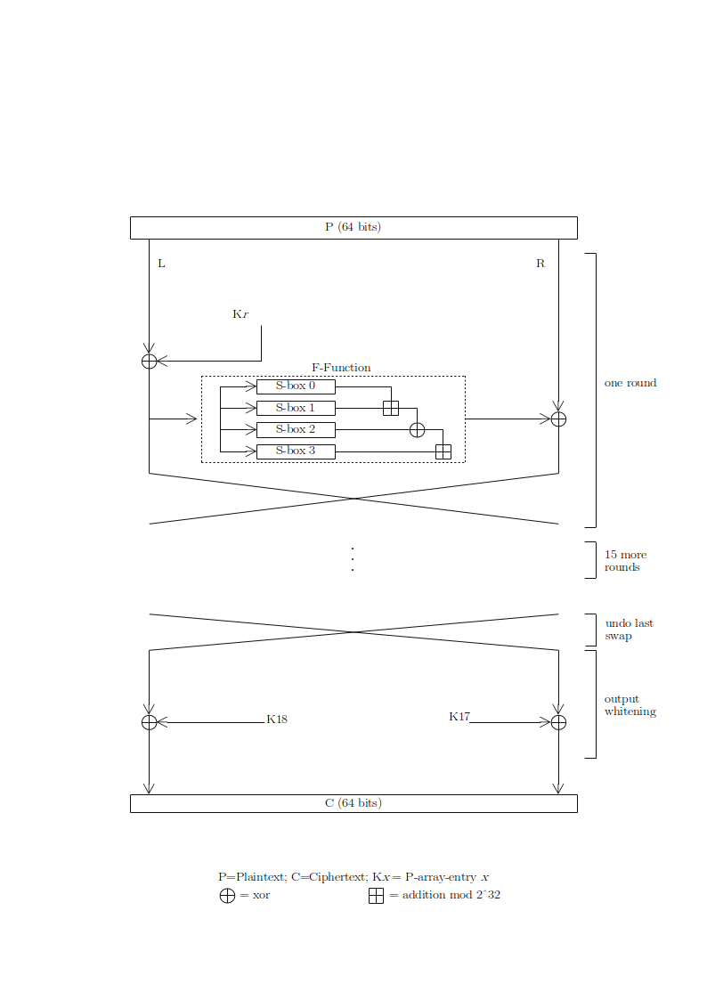
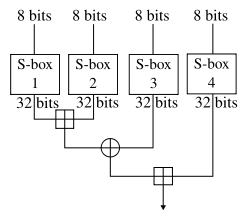
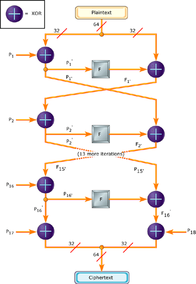

Blowfish is an another algorithm designed by Bruce Schneier in 1993 to replace DES. This symmetric cipher splits messages into blocks of 64 bits and encrypts them individually. Blowfish can be found in software categories ranging from e-commerce platforms for securing payments to password management tools, where it used to protect passwords. It�s definitely one of the more flexible encryption methods available.
It is known for both its tremendous speed and overall effectiveness as many claim that it has never been defeated. Meanwhile, vendors have taken full advantage of its free availability in the public domain.
Blowfish has a 64-bit block size and a key length of anywhere from 32 bits to 448 bits. It is a 16-round Feistel cipher and uses large key-dependent S-boxes. It is similar in structure to CAST-128, which uses fixed S-boxes.
Here is the visual representation of this encryption algorithm.


The diagram to the left shows the action of Blowfish. Each line represents 32 bits. The algorithm keeps two subkey arrays: the 18-entry P-array and four 256-entry S-boxes. The S-boxes accept 8-bit input and produce 32-bit output. One entry of the P-array is used every round, and after the final round, each half of the data block is XORed with one of the two remaining unused P-entries.
The diagram to the right shows Blowfish's F-function. The function splits the 32-bit input into four eight-bit quarters, and uses the quarters as input to the S-boxes. The outputs are added modulo 232 and XORed to produce the final 32-bit output.
Since Blowfish is a Feistel network, it can be inverted simply by XORing P17 and P18 to the ciphertext block, then using the P-entries in reverse order.
This algorithm is divided into two parts.
It will converts a key of at most 448 bits into several subkey arrays totaling 4168 bytes. These keys are generated earlier to any data encryption or decryption.
The p-array consists of 18, 32-bit subkeys:
P1,P2,. . . .,P18
Four 32-bit S-Boxes consists of 256 entries each:
S1,0, S1,1,. . . . S1,255
S2,0, S2,1,. . . . S2,255
S3,0, S3,1,. . . . . S3,255
S4,0, S4,1,.......S4,255
The subkeys are calculated using the Blowfish algorithm:
1. Initialize first the P-array and then the four S-boxes, in order, with a fixed string. This string consists of the hexadecimal digits of pi (less the initial 3): P1 = 0x243f6a88, P2 = 0x85a308d3, P3 = 0x13198a2e, P4 = 0x03707344, etc.
2. XOR P1 with the first 32 bits of the key, XOR P2 with the second 32-bits of the key, and so on for all bits of the key (possibly up to P14). Repeatedly cycle through the key bits until the entire P-array has been XORed with key bits. (For every short key, there is at least one equivalent longer key; for example, if A is a 64-bit key, then AA, AAA, etc., are equivalent keys.)
3. Encrypt the all-zero string with the Blowfish algorithm, using the subkeys described in steps (1) and (2).
4. Replace P1 and P2 with the output of step (3).
5. Encrypt the output of step (3) using the Blowfish algorithm with the modified subkeys.
6. Replace P3 and P4 with the output of step (5).
7. Continue the process, replacing all entries of the P array, and then all four S-boxes in order, with the output of the continuously changing Blowfish algorithm.
In total, 521 iterations are required to generate all required subkeys. Applications can store the subkeys rather than execute this derivation process multiple times.

It is having a function to iterate 16 times of network. Each round consists of key-dependent permutation and a key and data-dependent substitution.
All operations are XORs and additions on 32-bit words. The only additional operations are four indexed array data lookup tables for each round.
-----------------------------------------------------------------------
------------------------------------------------------------------------
Divide x into two 32-bit halves: xL, xR
For i = 1to 16:
xL = XL XOR Pi
xR = F(XL) XOR xR
Swap XL and xR
Swap XL and xR (Undo the last swap.)
xR = xR XOR P17
xL = xL XOR P18
Recombine xL and xR